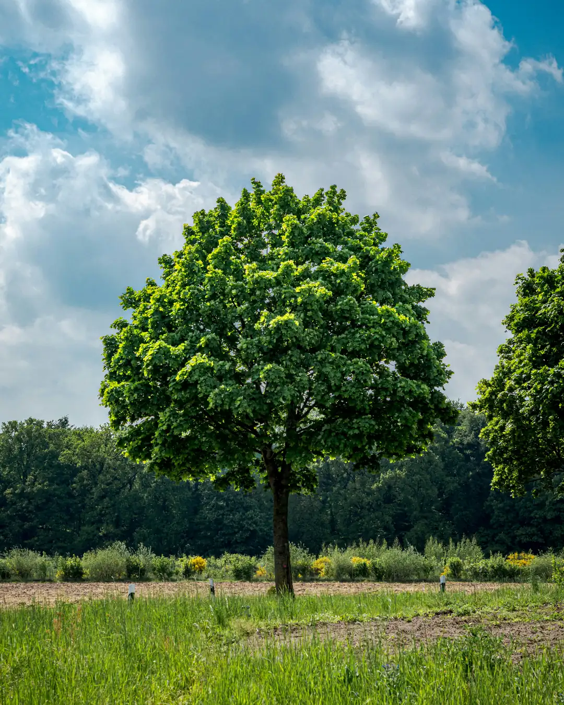
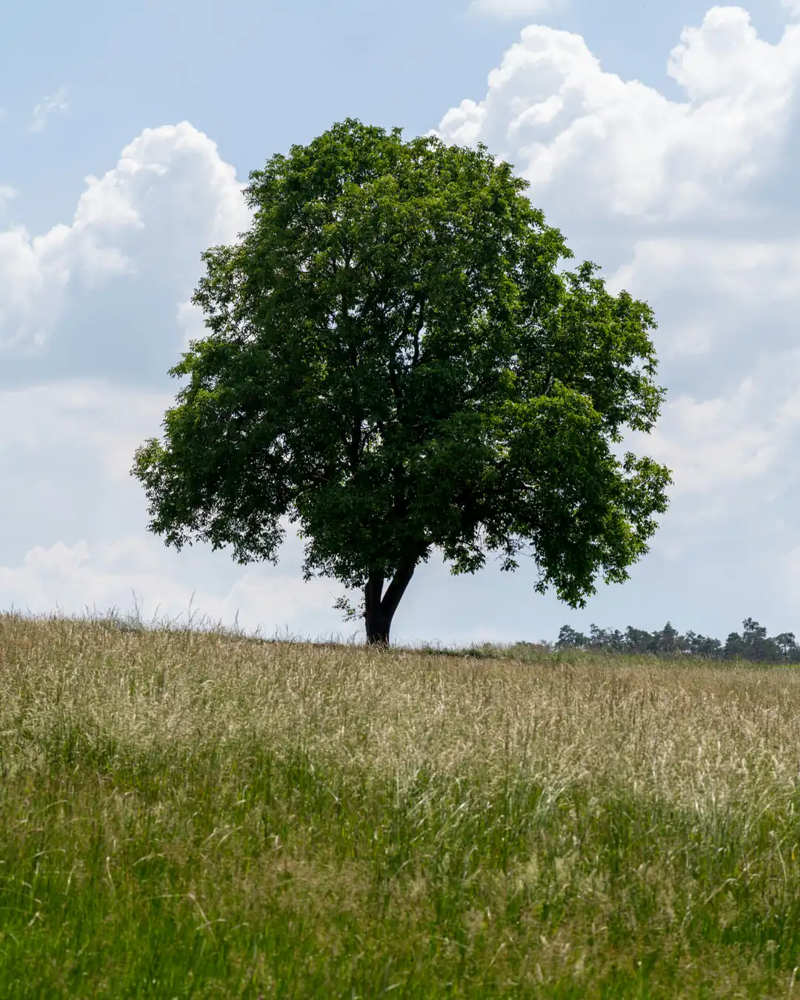
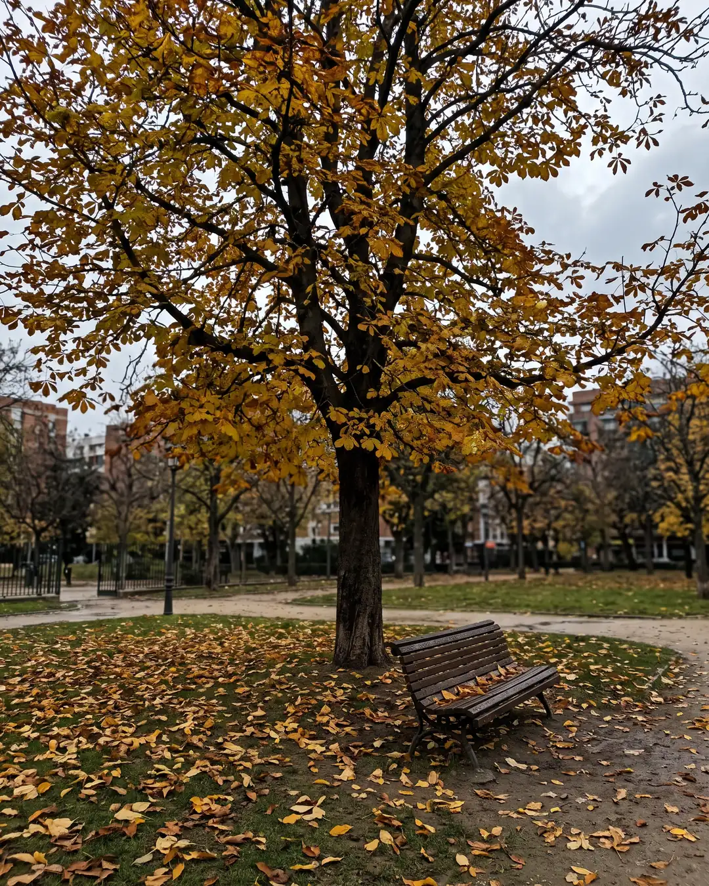
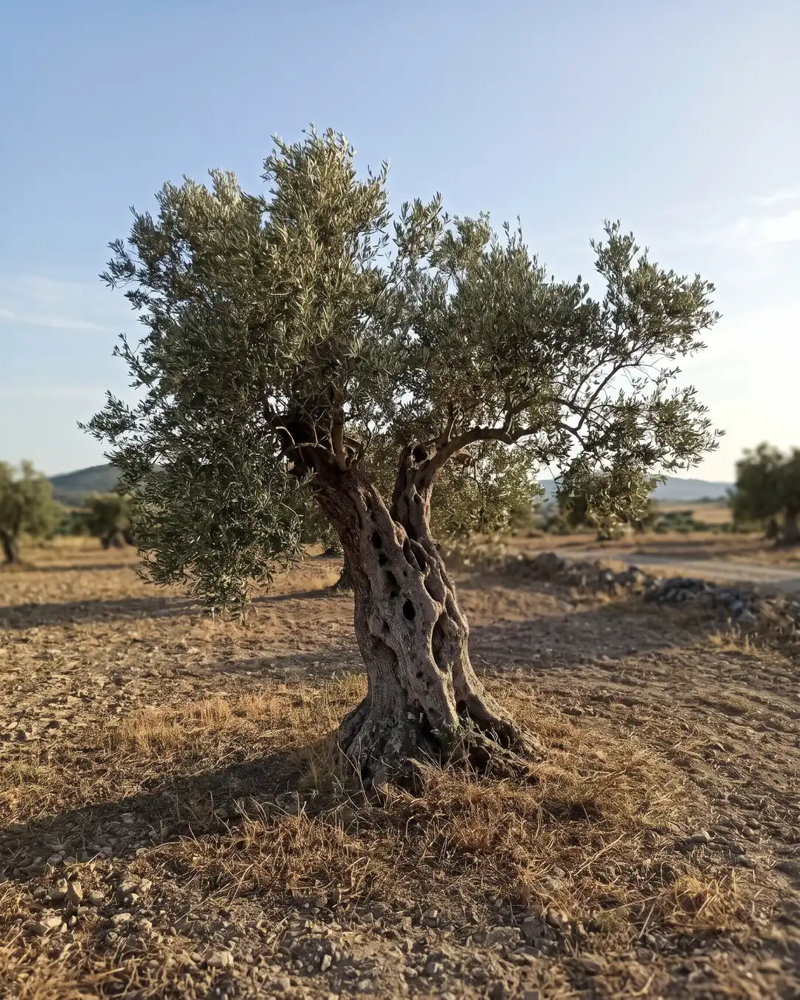
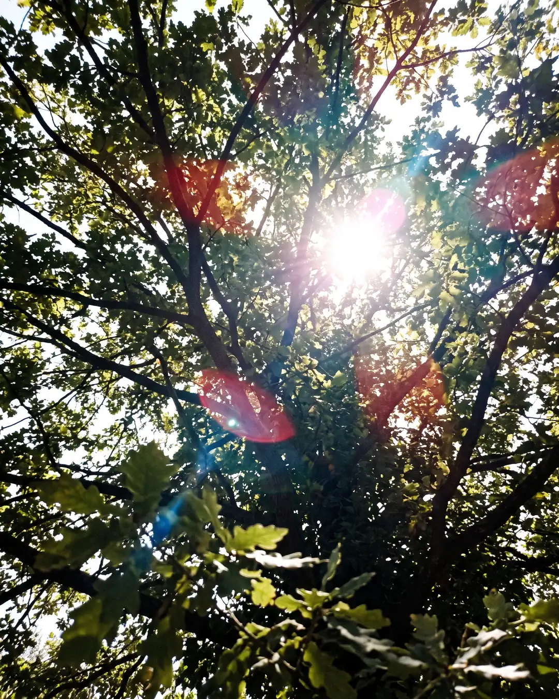

Caso n.º 8 · Árboles
Sobre este caso
El caso n.º 8 está cerrado. Fue el caso diario del 8 de noviembre de 2026 y su tema fue Árboles. Los detectives de aquel día tuvieron dos retos: cinco imágenes que clasificar en fotografías reales y generadas por IA, y cinco afirmaciones de una frase que clasificar en datos y bulos.
- Imágenes generadas por IA: 3 de 5
- Bulos: 3 de 5
Aquí tienes todas las respuestas. Cada imagen generada por IA trae el prompt que la creó, y cada afirmación, la verdad que hay detrás y los detalles que merece la pena recordar, para que compruebes qué se te escapó.
Uno de los bulos: «El árbol más alto del mundo es más alto que la Torre Eiffel.» La verdad: El árbol vivo más alto es Hyperion, una secuoya roja de California de unos 116 m, y la Torre Eiffel mide unos 330 m.
¿Quieres afinar la vista? Lee nuestra guía para detectar imágenes de IA o nuestra guía para detectar un bulo y luego juega el caso de hoy.
Imágenes
-
Imagen 1

REAL
Fotografía real
-
Imagen 2

REAL
Fotografía real
-
Imagen 3

IA
La confesión del sospechoso
Un árbol grande en un parque urbano en otoño, con hojas amarillas por el suelo y un banco a un lado; día nublado, luz plana.
-
Imagen 4

IA
La confesión del sospechoso
Un olivo viejo y retorcido en un campo seco a media tarde, con el sol bajo de lado y la sombra larga; el horizonte algo inclinado.
-
Imagen 5

IA
La confesión del sospechoso
Copa de un árbol vista desde abajo, con el sol colándose entre las ramas y provocando un destello; parte de la imagen quemada por el contraluz.
¿Dato o Bulo?
-
Afirmación 1
DATO «El árbol más aislado de la Tierra era el único en un radio de 400 km.»
Era el Árbol del Ténéré, una acacia del Sahara, en Níger, el único árbol en 400 km a la redonda.
- En 1973 lo derribó un camionero que presuntamente iba dormido o ebrio.
-
Afirmación 2
BULO «El árbol más alto del mundo es más alto que la Torre Eiffel.»
El árbol vivo más alto es Hyperion, una secuoya roja de California de unos 116 m, y la Torre Eiffel mide unos 330 m.
-
Afirmación 3
BULO «El récord de más árboles plantados en un día por un país es de 100 millones.»
En julio de 2019, Etiopía afirmó haber plantado más de 350 millones de árboles en solo 12 horas.
- El récord anterior era de la India, con unos 66 millones.
-
Afirmación 4
DATO «El organismo vivo más antiguo de la Tierra es un conjunto de árboles conectados de unos 80.000 años.»
Es Pando, una colonia clonal de álamos temblones de Utah (Estados Unidos) unida por un único sistema de raíces.
- Parecen unos 40.000 árboles, pero todos tienen la misma genética.
- Lleva creciendo decenas de miles de años.
-
Afirmación 5
BULO «Existe un árbol que parece «llorar sangre» por los animales que mueren en su interior.»
Algunos árboles, como el drago de Socotra, segregan una resina roja como la sangre, pero no por animales muertos.
- Es un mecanismo natural para cicatrizar heridas y defenderse de plagas.
- También ocurre con la Pterocarpus angolensis, en el sur de África.